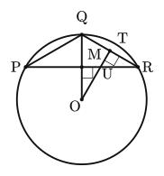

그림과 같이 원 O 위의 세 점 P,Q,R에 대하여 PQ=OQ이고, 선분 OQ와 현 PR는 점 M에서 수직으로 만난다. 점 O에서 현 QR에 내린 수선의 발을 T라 하고, 선분 OT와 현 PR의 교점을 U라 하자. TU=3cm일 때, 원 O의 지름의 길이는?

①
8cm
②
10cm
③
12cm
④
14cm
⑤
16cm
정답·해설 검토
③
원의 반지름의 길이를 rcm라 하자. OP=OQ=PQ=r이므로 삼각형 OPQ는 정삼각형이다. 원의 중심에서 현에 내린 수선은 그 현을 이등분하므로 PM=MR이고, △OPM과 △ORM는 합동이다.
O,M,Q는 한 직선 위에 있으므로 ∠POM=∠POQ=60∘이다. 따라서 ∠MOR=60∘이고, ∠QOR=60∘이다. OQ=OR이므로 삼각형 OQR도 정삼각형이다.
직각삼각형 OPM에서 ∠OPM=30∘이므로 OM=2r이다. 또 OT⊥QR이므로 정삼각형 OQR에서 RT=2r, OT=23r, ∠TOR=30∘이다. ∠MOU=30∘이므로 두 직각삼각형 OMU와 OTR는 닮음이다. 대응하는 변의 길이의 비에 따라 OROU=OTOM=3r/2r/2=31이므로 OU=33r이다.
점 U는 선분 OT 위에 있으므로 TU=OT−OU=(23−33)r=63r이다. 이것이 3이므로 r=6이다. 따라서 지름의 길이는 2r=12cm이고 정답은 ③이다.